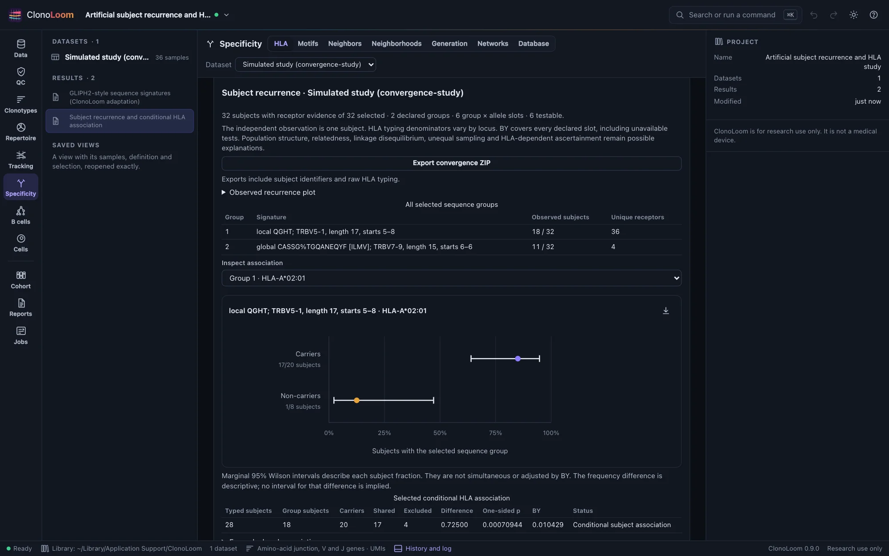
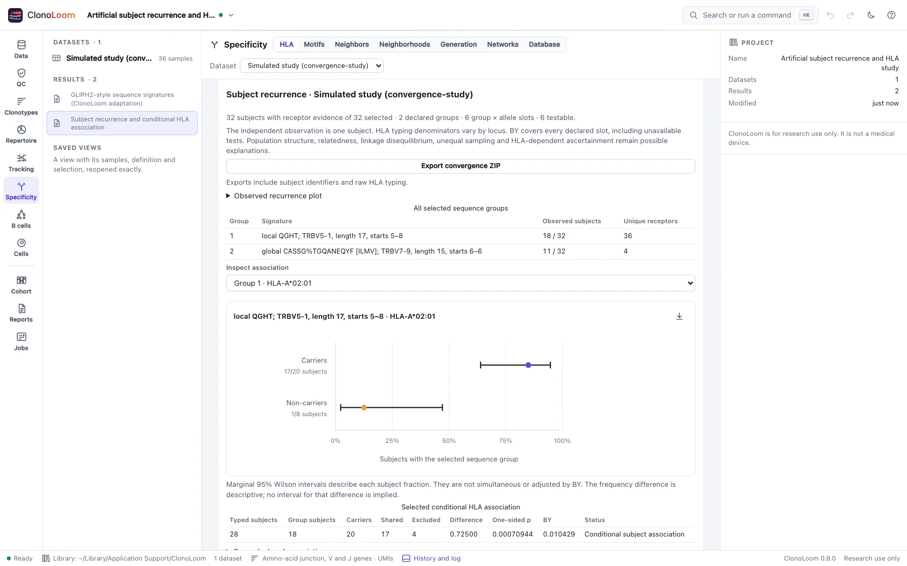

Subject recurrence and HLA
Ask whether a saved sequence group recurs across subjects, and whether its observed presence is associated with a declared HLA allele. Neither result establishes antigen specificity or HLA restriction.
Declare subjects and typing
- Save a motif screen under the intended TRB definition and QC. Declare the sequence groups and allele panel before inspecting HLA outcomes.
- Open Specificity → HLA and choose the saved screen. Expand Declare groups, samples, subjects and typing. Confirm human subjects, select comparable samples and give each sample exactly one subject ID.
- Select Prepare subject table from annotations. Review all suggested typing. Conflicting annotations require an explicit resolution. Each tested locus needs two allele copies: repeat a homozygous name. A missing copy is unknown.
- Choose saved signatures and a target allele panel, then select Analyze recurrence and HLA. Leave the allele panel empty for descriptive recurrence only.
One subject contributes once across all selected samples. Receptor abundance, multiple member sequences and repeated visits never create independent observations. A subject without any eligible receptor evidence is unevaluable. Other subjects without a member have observed non-detection; unequal depth and repeated sampling can change detection opportunities.
Read the observed evidence


The group table and recurrence plot use all receptor-evaluable subjects. Exact receptor tables retain full V-gene/amino-acid-junction identities and subject lists. The HLA plot uses the complete typed universe for that locus, including subjects without the group. Carrier and non-carrier fractions share a fixed 0–100% axis and show exact counts and marginal 95% Wilson intervals. An absent denominator gives no point.
The intervals are neither simultaneous nor BY-adjusted, and they do not describe uncertainty in the difference between fractions. The table reports that difference descriptively. Expand Every declared association and Subject membership, typing and exclusions for the complete evidence; no reporting threshold hides family members.
Typing resolution and unknowns
Comparisons use two-field HLA names. Unambiguous two-, three- or four-field calls are accepted and raw text is retained. Loci A, B, C, DRB1, DQA1, DQB1, DPA1 and DPB1 require two explicit copies. Missing, incomplete, ambiguous, low-resolution, wrong-locus, G/P-group and expression-suffix calls make the entire locus unknown, never non-carriage. No suffix stripping, typing imputation, serotype conversion or HLA registry lookup is performed. Check typing quality and allele names against your source laboratory records.
Each locus has its own complete-case subject universe, held fixed across groups and alleles at that locus. A subject can be evaluable for B and unknown for A. Variable-copy DRB3/4/5 loci, haplotype phase and class-II heterodimer inference are outside this implementation.
Conditional association and its limits
With N typed subjects, C carriers, G subjects with the group and A shared subjects, the test is the upper hypergeometric tail P(X≥A) conditional on N, C and G. Fewer than four evaluable subjects or constant carriage/group margins gives an unavailable test. The four-subject floor is a structural check, not a claim of adequate power. BY correction includes every declared group × allele slot, including unavailable tests. The original motif-screen scores remain separate.
Independent, exchangeable subjects and comparable ascertainment are assumptions. Population structure, relatedness, linkage disequilibrium, repertoire depth, sampling opportunities and HLA-dependent recruitment can explain associations. BY does not repair confounding or selecting groups, alleles and samples after seeing outcomes. Observed recurrence is not proof of convergent recombination; HLA association is not restriction or antigen recognition. Validate hypotheses in independent cohorts and experiments.
This is a ClonoLoom extension inspired by published GLIPH subject-level HLA analysis, not the published composite score or a claim of GLIPH2 equivalence. Its explicit diploid typing policy, full declared BY family and Wilson plots are implementation choices. Bounds are 200 subjects, 256 samples, 4000 captured receptor identities, 128 groups and 64 alleles.
Try the artificial study
Open Subject recurrence and HLA study from Examples. Its truth/arms.json and truth/subjects.json retain the exact assignments. Screen the declared arms with motif lengths 4–4, then select the QGHT length-17 signature starting at window 5–8 and the global ILMV signature. Declare HLA-A*02:01, HLA-B*07:02 and HLA-DRB1*15:01. The six-slot family includes the planted A association (p≈0.0007094; BY≈0.01043). The data use varied junctions and uneven shifted gamma-Poisson UMI counts, but no fitted haplotypes or antigen annotations.
Keep and reproduce the result
The result captures its checked parent, definition, QC, source provenance, explicit subject/typing declaration and sequence membership. Reopening and durable replay work without the parent artifact or source files. Export convergence ZIP provides complete JSON, manifest, subjects, association and recurrence CSVs, and NOTICE with source terms. Exports include subject identifiers and raw HLA typing. SVG/PNG/PDF captions retain the denominators, selections, method and limitations. Remote clients use analyze_convergence.
Method sources
- Glanville et al. (2017). Identifying specificity groups in the T cell receptor repertoire. Subject-level HLA enrichment inspiration.
- Fisher (1922). On the interpretation of χ² from contingency tables, and the calculation of P.
- Benjamini & Yekutieli (2001). False discovery rate under dependency.
- Wilson (1927). Probable inference, the law of succession, and statistical inference.
- IPD-IMGT/HLA. Naming alleles.